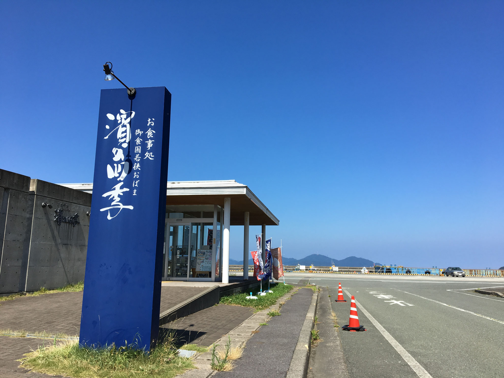
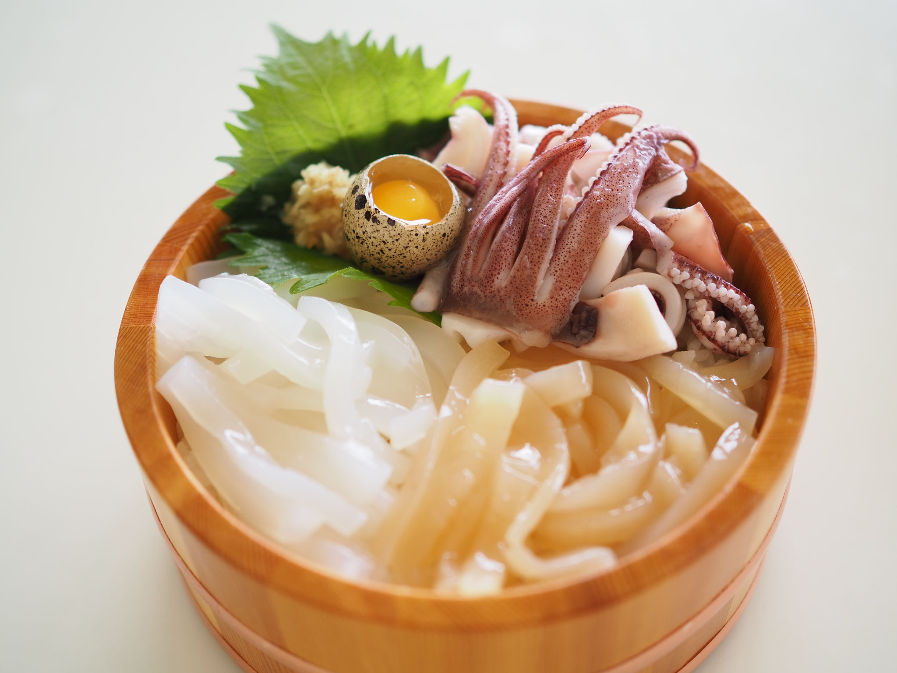
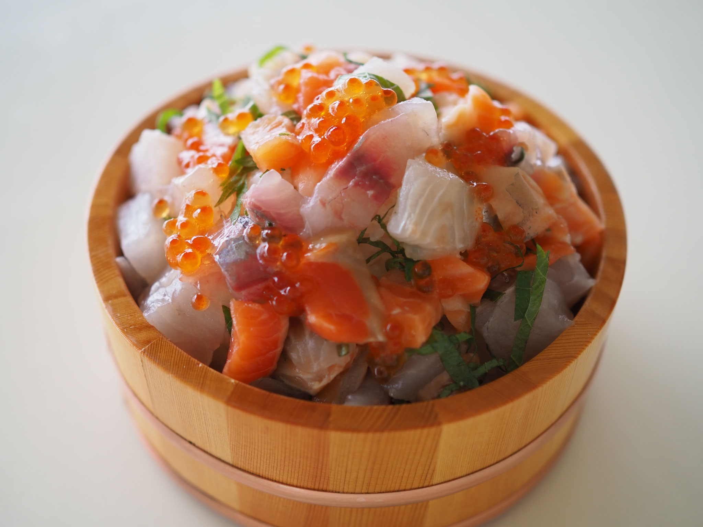
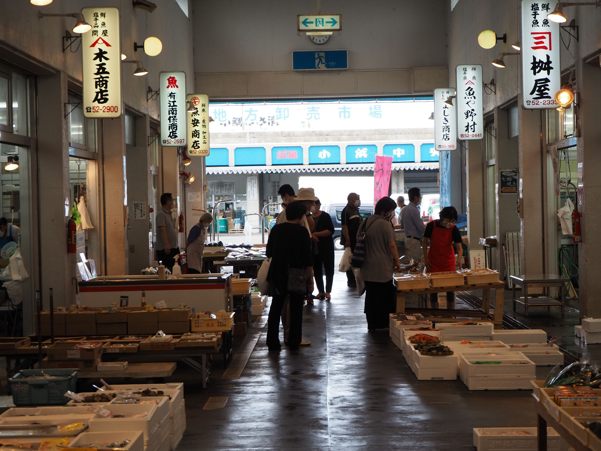
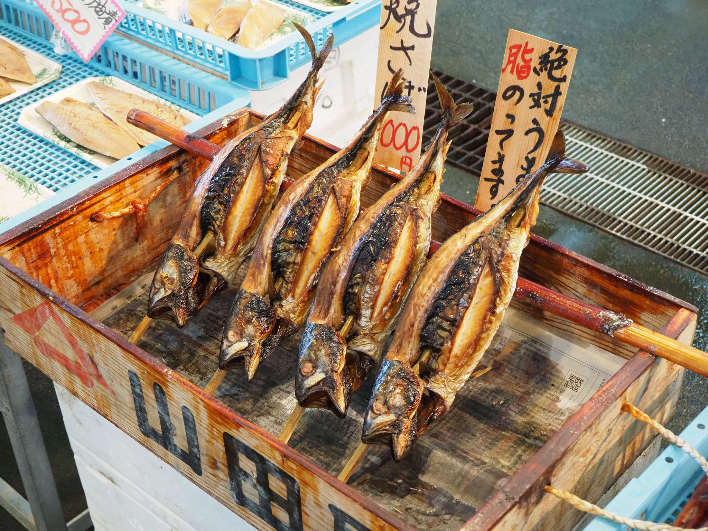
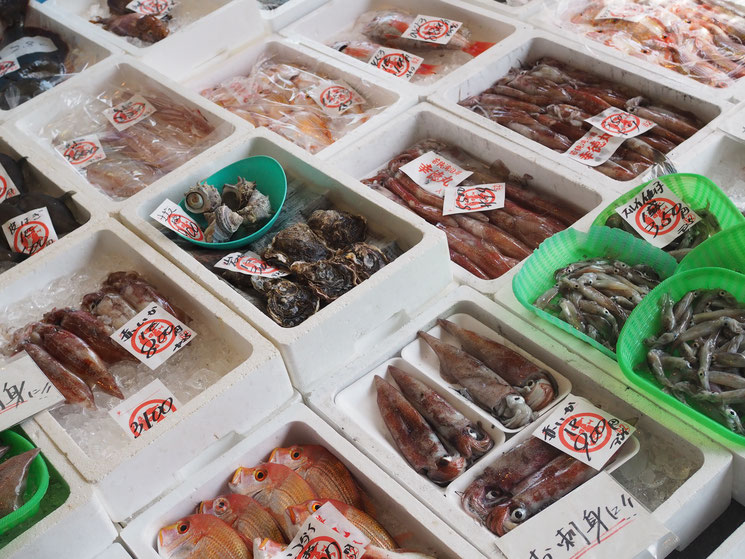

お食事処 御食国若狭おばま 濱の四季



小浜にこだわった郷土色豊かなメニュー。海の景色は必見です。 美味しくってとっても映える、桶に入ったどんぶりがおすすめ。 小浜イカ丼、ふくいサーモン丼、濱盛り丼などの定番メニューのほかに、期間限定メニューが盛りだくさん。
近くに小浜漁港や御食国若狭おばま食文化館が近くにあるから
釣りや観光のご褒美にもうってつけ！！
若狭小浜お魚センター



一般の方も購入いただける市場。 魚の鮮度、価格、豊富さには絶対の自信を持っています。 市場で仕入れた新鮮な魚を各店舗が販売していて、お店こだわりの干し物や加工品なども楽しみのひとつです。
四季によって旬のお魚も楽しみ。今何がおいしくて、何が出ているかなどお気軽にお問合せください。